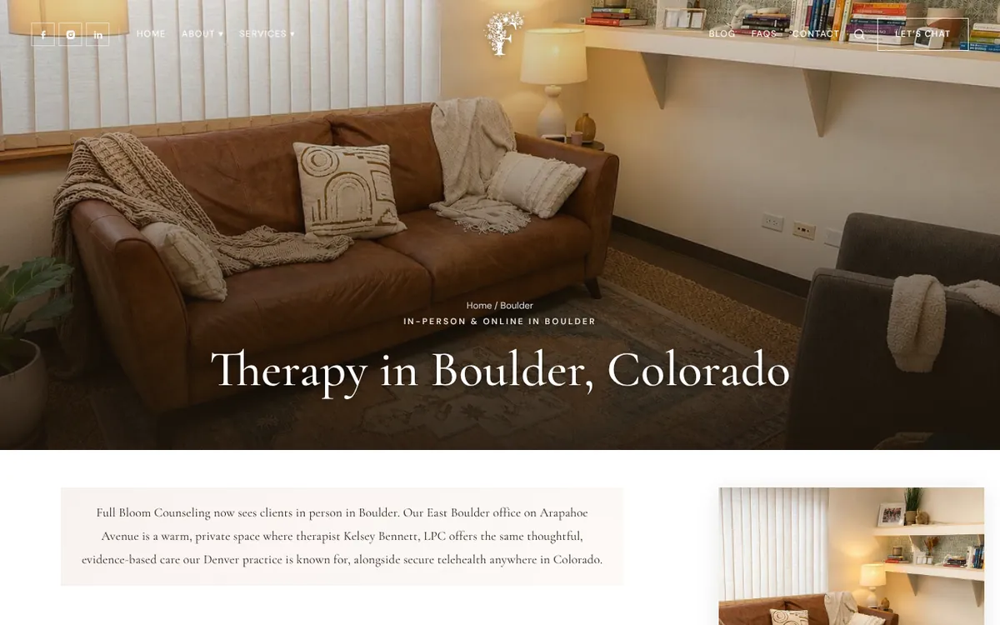
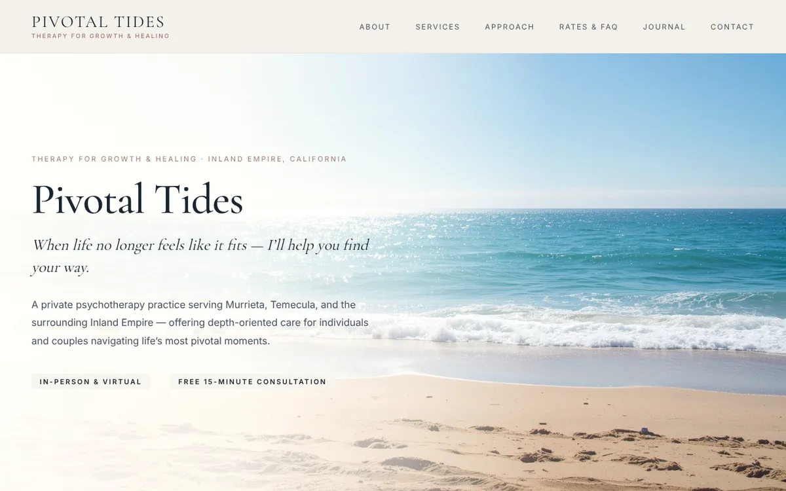

Full Bloom Counseling, the group practice on channel 02, has two offices. The Denver one has had a Google Business Profile for years. The Boulder one, on Arapahoe Avenue, was an address on the contact page and nothing else.
To Google, that meant Full Bloom was a Denver practice. Someone in Boulder searching for a therapist near them got Boulder results, and a listing 25 miles away doesn’t make that list. The office was real, it had a therapist seeing clients in it every week, and it was invisible to the people who lived down the street.
So this summer it got its own listing.
What went into it
A second profile, verified at the Boulder address, with the same name and phone number as the Denver one so Google treats them as two locations of one practice instead of two strangers. Its own hours, and photos, including the building from the street, so people know what they’re walking up to. And a website link that goes to the Boulder page, not the homepage, so someone who found the Boulder office lands on Boulder.
That page matters as much as the listing. It names the office, the street, who sees clients there, and it carries the same address in its structured data that the listing has. When the website and the listing agree word for word, Google trusts both a little more.

What it did
The listing started showing up in searches in August. From then through the first days of November:
From the listing’s own Performance report, June through November 12, 2026. June and July were zero.
September and October each brought around 40 of those direction requests and clicks. Since then, more of the practice’s new clients have been coming in through Boulder.
Notice what nobody did: call. Zero calls from the listing. People looked at the office, looked at where it was, and asked how to get there. For a therapy practice that makes sense. The listing isn’t where someone decides to start therapy. It’s where they check that you’re real, close and not in a strip mall they hate, and then they go to the website to read about the therapist.
A little over half of the people who saw the profile found it on their phone, and about a quarter found it on Google Maps rather than regular search. That’s the other reason the second listing matters. Maps doesn’t show a business that has no pin there.
The rules, briefly
Google only wants a listing where you actually see people. A real office, with your name on the door or the directory, staffed during the hours you post. A coworking desk you’ve never sat at, or a mailbox, will get the listing suspended, sometimes along with your main one.
If you only work by telehealth, you don’t get a pin, but you can still have a listing. Hide the address and set the areas you serve instead. That’s how my own listing works: no office on the map, a list of the places I serve.
It doesn’t have to be Colorado
I set up the next one from Denver. Angelique Danza practices in Temecula, and her listing was built the same way: verified at her office on Ridge Park Drive, matched word for word to the address in her site’s structured data, with the site pointing back at it. Someone searching from Murrieta or Temecula finds her pin and a site that says the same thing it does.

Roshunda Hartison sees clients in Katy, Texas, and online in three states. I built her site, not her listing, but the site was written for one: her Katy address and phone number sit in the structured data, matching what’s on the page, so whenever her listing and her site meet, Google can tell they’re the same practice.
Every office you see clients in should be a pin on the map.
If you have more than one office
Give each one its own verified listing and its own page on your site, and point each listing at its page. Keep the practice name and main phone number identical everywhere. Put up photos of the real place. When you ask clients for reviews, ask the ones who come to that office, and it doesn’t hurt if they mention the town.
Then leave it alone for a couple of months. Boulder did nothing in July. By September it was one of the busier things the practice had going.